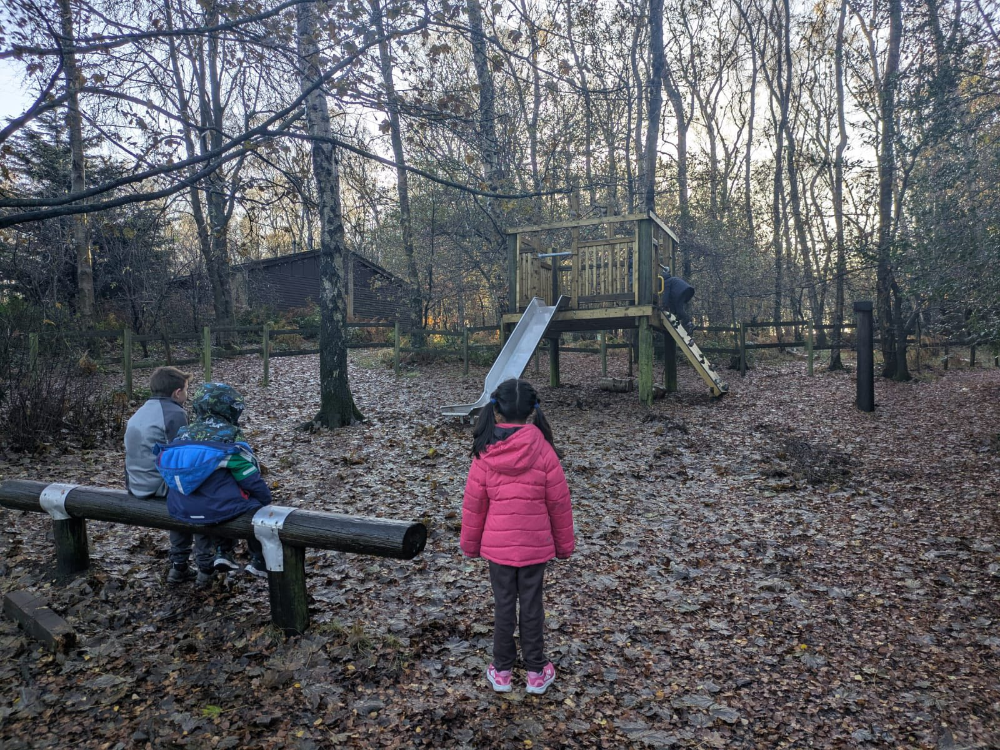

We provide opportunities for young people to develop skills, make friends, and have fun through Beavers, Cubs, Scouts, and volunteering.
We are purely volunteer run, and many of our volunteers were never involved in scouting before. We are always looking for more adult help to keep our groups running, and potentially open Squirrel and Explorer sections, so please do get in touch if you may be able to help - as much or as little time and commitment as you can give, we will be grateful!
